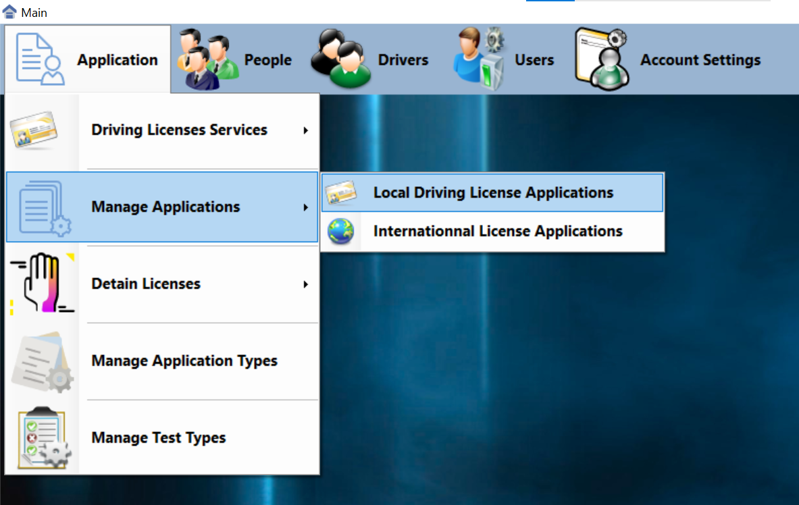
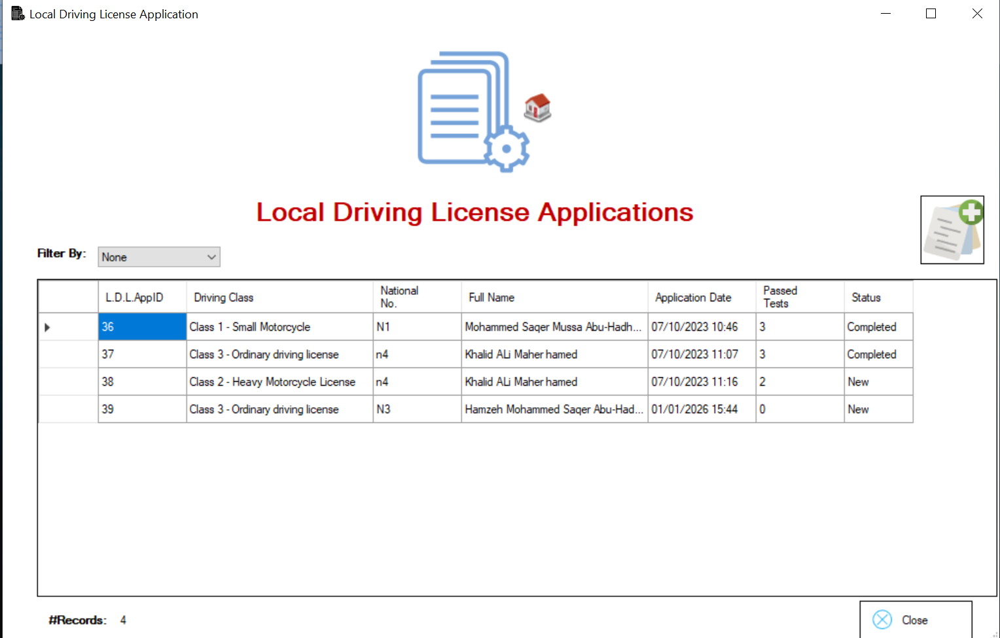
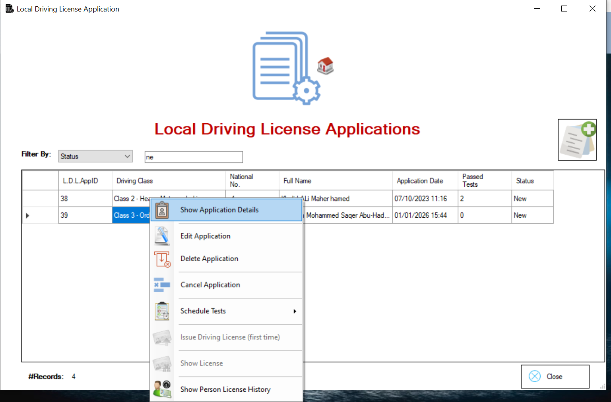
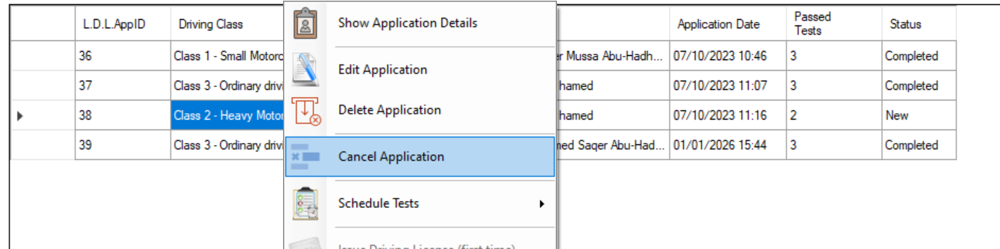
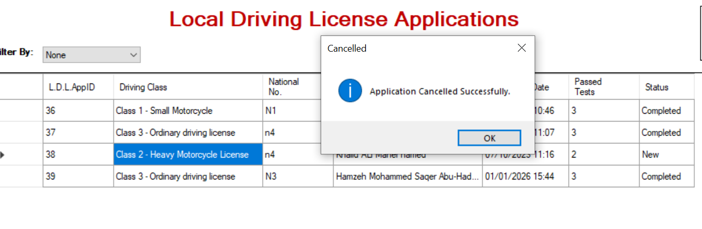

Pour réussir les tests et gérer tous les processus de test, nous passerons à la Manage Applications.

Lorsque je vais dans Manage Application dans Locale Driving License Application , cet écran s'affiche.

Dans cette étape, nous voyons la fonctionnalité de filtrage.
Dans cette étape, nous voyons la liste du contexte que nous avons: Show Application Details , Edit Application, Delete Application, Cancel Application, Schedule Tests, Issue Driving License(First Time) , Show License, Show Person History

Dans l'option Show Détails, les informations concernant la personne apparaissent.

Dans l'option Edit Application, il est possible de mettre à jour la catégorie de licence de la personne

L'option Cancel Application permet, en cas d'erreur, par exemple en dépassant accidentellement quelqu'un, d'annuler le test et d'en passer un autre.
Step 1:
Step 2:

Step 3:

Step 4:
Step 5:
Dans ce test à choix multiples, il y a trois épreuves :vision, writing, and Drive.
Si je réussis uniquement la première épreuve, je ne pourrai pas accéder aux deuxième
et troisième épreuves, car le système désactivera ces options. De même, si je réussis la
première épreuve, je ne pourrai pas repasser l'épreuve de vision, car elle sera également
désactivée, tout comme la troisième épreuve. J'expliquerai toutes ces étapes dans la vidéo
ci-dessous. De plus, l'option Issue Driving License (First Time) est
désactivée car vous n'avez pas terminé le test, et l'option Show License l'est également.
Une fois tous les tests réussis, ces deux options seront activées et vous pourrez consulter le contenu.
Enfin, l'option Show Person's License History vous permettra de voir les catégories du
permis, s'il avoir d'un permis de conduire international, et d'autres détails comme la validité, la perte
ou la détérioration du permis, etc.